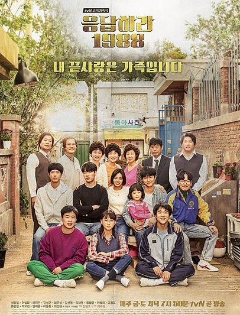
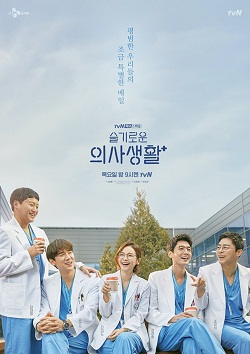

Top Rated Sepanjang Masa
Drama yang wajib kamu tonton setidaknya sekali seumur hidup.

01
Reply 1988
Persahabatan, keluarga, dan cinta pertama di akhir tahun 80-an di gang Ssangmundong.
02
Crash Landing on You
Cinta lintas batas antara pewaris Korea Selatan dan tentara Korea Utara.

03
Goblin
Kisah fantasi romantis tentang pelindung jiwa abadi dan pengantinnya.

04
Hospital Playlist
Keseharian lima dokter spesialis yang bersahabat sejak kuliah dan rutin main band.